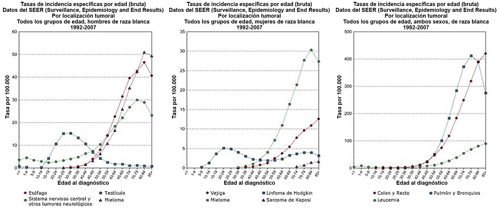

CASO CLÍNICO
En estos tres gráficos se presentan las incidencias de cáncer por distintos grupos de edad y localización en Estados Unidos para el periodo 1992-2007:

Fuente SEER, 13 áreas de Estados Unidos (San Francisco, Connecticut, Detroit, Hawaii, Iowa, Nuevo México, Seattle, Utah, Atlanta, San José-Monterey, Los Ángeles, Alaska Native Registry y Georgia rural).
Solamente se incluyen los tumores invasivos. Las tasas son por 100.000 habitantes. No se muestra los datos basados en menos de 16 casos.